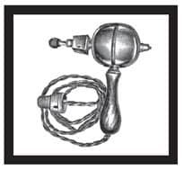
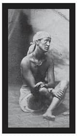

KADININ YERİ
Hiçbir zaman cevaplanamamış olan ve benim
de kadın ruhuna dair otuz yıllık araştırmalarıma
rağmen cevaplamaya henüz muvaffak olamadığım
soru şudur: “Kadınlar ne ister?”
Sigmund Freud
19. Yüzyıl’a gelindiğinde, hâkim olan eril bakış açısı bir kadının alımlı, uysal ve iffetli olması gerektiği yönündeydi. Diğer yandan, bu özelliklerin kadının duygusal, değişken ve mantıksız doğasıyla zıt olduğu düşünülüyordu. Felsefeci ve ilk feminist yazarlardan olan Mary Wollstonecraft erkek eğitimcilerin kadınların mantıklı bireyler olmalarına müsaade etmediklerini, onları adeta birer süs eşyası olarak yetiştirdiklerini ve kadınların “akıl yürütmektense hissetmek üzere yaratıldıkları”na dair görüşe uymaya zorlandığını iddia etti. Bunun sonucu olarak da çeşitli sorunlar doğmuş, edep anlayışının neredeyse cinsiyetsiz görünen yüzüyle gerçeklik arasında derin bir uçurum oluşmuştu.
Sonuçta, Bagnio ve genelevler hayatın kabul görülen bir yüzüydü; erotik edebiyat üretimi etrafında hızla büyüyen ve alıcı bulmakta hiç sıkıntı yaşamayan bir endüstri söz konusuydu; hayat kadınları ve erkeklerle birlikte olan erkek fahişeler de mesleklerini icra etmeyi sürdürüyorlardı.
Histerik Kadınlar
Erkekler yalnızca kadın zihnini değil, kadın bedeninin işleyişini anlama konusunda da sınıfta kaldılar; kadın bedeninden adeta korktular. Bu durum, gittikçe büyüyen “dişil histeri” meselesine bakıldığında iyice ayyuka çıkar.
Vibratör, ancak Sex and the City dizisinde Samantha, tavşanı tanıttıktan sonra açıkça konuşulabilir hale gelmiş modern bir icattır. Aslında vibratör 19. Yüzyıl’ın sonlarında elektrikle çalışır hale getirilen ilk cihazlardan biridir; dikiş makinesinden hemen sonra, elektrikli süpürgeden ise oldukça önce kullanılmaya başlanmıştır. Belli ki Victoria döneminde yaşamış olanlar önceliklerini iyi belirlemişlerdir.
İlk elektromekanik vibratör 1873’te Fransa’da geliştirilmiş (başka nerede olacaktı ki?) ve öncelikle akıl hastanesindeki hastalar arasından ‘dişil histeri’den muzdarip olanları tedavi etmek için denenmiştir.
Pek de şaşırtıcı olmayan bir biçimde nefes darlığı, bayılma, uykusuzluk, asabiyet, yemeğe ya da cinselliğe yönelik iştah kaybı, başağrıları, duygusal dengesizlik ve “olay çıkarma eğilimi”, melankoli, depresyon, midede ağırlık hissi, kas ağrıları ve mizaç değişimlerinin tümü, doğurganlık döngüsüyle ilgiliydi. Fakat 19. Yüzyıl’da doktorlar bunları ‘dişil histeri’ olarak yaftalanan durumun belirtileri olarak görüyorlardı. Peki en sevdikleri tedavi yöntemi neydi? Doktor tarafından, kadın ‘histerik paroksizm’e ya da orgazma erişene kadar yapılan vajinal masaj.
Neredeyse her tür rahatsızlık dişil histeri teşhisine uydurulabileceğinden (bir doktor çeşitli belirtileri sıraladığı yetmiş beş sayfalık bir katalog bile oluşturmuştu), ayrıca saygıdeğer kadınların cinsel arzu duymaması ve seksten zevk almaması gerektiği düşünüldüğünden, binlerce kadınların sorunu acilen çözebilmek için doktorlara koşturması şaşırtıcı değildir. 19. Yüzyıl’ın ortalarında, Victoria dönemi ahlakının en ağır hissedildiği zamanlarda, kadınların dörtte birinin bu durumdan şikayetçi olduğu iddia ediliyordu.
Histeri tedavisi doktorlar için gayet kârlı bir işti; durum hayati tehlike arz etmiyor fakat tekrara dayalı, sürekli bir ilgiyi gerektiriyordu. Bu nedenle doktorlar hastaları ebelere ya da hemşirelere yönlendirmekte isteksiz davranıyor fakat tedavinin çok zaman harcadığını ve bıktırıcı olduğunu düşünüyor, hastayı histerik paroksizme ya da orgazma ulaştırmakta da genelde zorlanıyorlardı. Bu noktada, dönemin doktorlarının hepsinin erkek olduğunu da hatırlatmalıyız.
Kadınları orgazma ulaştırana kadar geçen zaman boyunca (bazen saatlerce) rahat ettirmek için, şezlong ve tek tarafta kolu olan uzanma koltukları yaygın olarak kullanılıyordu. Uzanmak için tasarlanmış özel odalar dahi vardı ve vajinal masaj rutin bir tıbbi yöntem olarak kabul görüyordu. Başa çıkabileceklerinden çok daha fazla hastaları olduğundan uzun saatler çalışan doktorlara yardım etmek için, kas ağrılarının oluşmasını engelleyecek su spreyleri ve mekanik aletler geliştirilmişti. Başlangıçta bu aletlerin yalnızca doktorlar tarafından kullanılması düşünülmüştü, fakat evlerde elektriğin yaygınlaşması kendi tedavilerini gerçekleştirmek isteyen kadınların oluşturduğu bir tüketici pazarı yarattı.
1870’lerle 1930’lar arasında vibratör reklamlarına sıkça rastlanıyordu. 1930’larda, kadın cinselliğine dair farkındalığın artması vibratörün anaakım reklamlardan yok olmasına yol açtı, çünkü artık cihazın kas masajı için kullanılmasına odaklanmak ve kadınların cihazı aslında neden kullanıyor olabileceklerini görmezden gelmek mümkün değildi.

İlk taşınabilir vibratörlere bir örnek
Dişil histeri 19. Yüzyıl’a ait bir buluş değildi ve uzun bir tarihi vardı. Kelime ‘hysterikos’tan geliyordu, bu da Yunanca’da rahmin bedendeki doğru yerini ararken göğüs kafesine ve akciğerlere doğru hareket etmesi durumunu ifade ediyordu. Histeri ve nefes darlığının birbiriyle ilişkilendirilmesi de buradan kaynaklanır. Terimi ilk kez Hipokrat kullanmış ve cinsel tatminsizliği temel sebep olarak görmüş, her ne kadar hapşırma tavsiyesinde de bulunsa, seks ve evliliği en iyi tedavi yöntemleri olarak önermiştir.
Yaklaşık beş yüzyıl sonra, M.S. 150’de, Romalı doktor ve felsefeci Galen de histerinin rahimden kaynaklandığını öne sürmüş, ancak rahmin yer değiştirdiği görüşünü paylaşmamıştır. Bunun yerine seks yoksunluğunun dişil ‘sperm’in birikmesine ve toksik buharlar üretmesine neden olduğunu iddia etmiştir. Evlilere daha fazla seksi, evli olmayan kadınlara da bir ebe tarafından orgazma ulaşana kadar yapılacak pelvik masajı önerir. Zehirli buhar görüşü yüzyıllarca kabul görmüş, sosyetik hanımlar ve Victoria döneminin asil kadınları -o dönemde doktorlar gerçekte herhangi bir buharın söz konusu olmadığını fark etmiş olsa da- bu ‘buharların’ etkisinden sık sık şikayetçi olmuştur.
Erkeklere Özel
Erkekler dışlanmış hissetmesin diye 19. Yüzyıl’da elektrikli ‘penisi harekete geçirici’ kemerler ve yatakların tanıtımını yapan reklamlar ortaya çıkmış, utanç verici iktidarsızlık vakalarını tedavi etmeyi ve güçlü, elektrikli ereksiyonlar sağlamayı vaat etmiştir.
Portland, Oregon’da Sanden Electric Company’ye ait “Dr. Sanden’s Electric Belt and Suspensory” (Dr. Sanden’in Elektrikli Kemer ve Askısı) ürünü için hazırlanan bir reklam şöyle soruyordu: “Erkekler, neden güçsüzsünüz?” Reklam, kemerin güçsüz düşmüş ve sinirsel zayıflık, sperm zayıflığı, iktidarsızlık, erkeklik kaybı, romatizma, sırt ağrısı, böbrek rahatsızlıkları, asabiyet, uykusuzluk, hafıza güçsüzlüğü çeken erkeklerin tüm dertlerine derman olduğunu iddia ediyordu.
Bir Evliliğin Portresi
Toplumun çifte standartlarını ve Victoria dönemi ikiyüzlülüğünü Arthur Munby ve Hannah Cullwick’in hikayesi kadar açıkça ortaya koyan pek az örnek vardır. Bu hikaye, cinsel saplantı ile dürtüleri dizginlemenin tuhaf zıtlığını gözler önüne serer.
Hasır paspası çektim ve maşayı kenara aldım.
Kömür tozlarını süpürdüm. Sonra soyundum
ve yıkanırken uzanamadığım sırtıma ve
kafama bir örtü geçirdim, ayağıma da eski
ayakkabılar giydim, çünkü şömine sıcaktı.
Şöminenin içinde yeterince yer vardı. Bir
tabureye çıkıp bacadan yukarı tırmandım.
Bacanın her yerinde yumuşak ve sıcak,
katran haline gelmiş kurumlar vardı. Kollarımı
birkaç sefer kurumun içine gömdüm.
Neredeyse üzerimden katran akacaktı.
Bir an bacada durup Massa beni aşağı
inince böyle görse ne kadar hoşuna giderdi
diye düşündüm. Bacanın dışı çok soğuk gibi
duruyordu. Suya girip kendimi yıkadım.
Bir güzel temizlenmem epey uzun sürdü ve
üzerimden akan sular simsiyah ve çok yoğunlukluydu.
Hikayedeki şömine temizlikçisi Hannah Cullwick’ti; Bay ve Bayan Caufield’in Clobe House, St Leonard’s-on-Sea, Sussex’teki evlerinde her işe koşan bir hizmetçi. Bu yazıyı 26 Nisan 1865’te yazmış ve sevgili “Massa”sına, yani Arthur Munby’ye göndermişti. Munby orta sınıftan bir devlet memuruydu. O dönemde geçirdiği bir binicilik kazası nedeniyle nekahet dönemindeydi.
“Massa” Hannah’ın Arthur’a verdiği gizli isimdi; doğduğu bölge olan Shropshire’ın lehçesini kölelik imalarıyla birleştiren, biraz rahatsız edici bir ifadeydi bu. İkisinin arasındaki efendi-köle ilişkisini ve Hannah’ın tenini baca kurumuyla karartmaktan aldığı hazzı yansıtıyordu. Hayatının çoğu döneminde sağ bileğinin etrafına deri bir kayış, boynuna da anahtarı Munby’de bulunan kilitli bir zincir taktı. Tüm bu kanıtları dışardan bakıldığında gayet normal olan elbisesinin altında özenle saklamıştı.
Arthur Munby kutular dolusu günlük ve not bırakmıştır, fakat bunların içinde mesleki hayatına dair neredeyse hiçbir şey yoktur. Esas yaşamı, iş saatlerinden arda kalan zamanda saklıydı. İri, güçlü kadınlara karşı büyük bir hayranlığı ve fetişi vardı; özellikle de işçi sınıfından gelen ve ağır, bedensel, kirli işler yapanlara.
İşten çıkınca kilometrelerce yürür, kadınlara bakar, onları takip eder ve onlarla konuşup hayatlarıyla ilgili detaylı sorular sorardı. Bu kadınların çizimlerini yapar ve notlar alırdı. Ayrıca kadın maden işçilerinin, hizmetçilerin, akrobatların, temizlikçilerin, sütçülerin ve balıkçıların karılarının yüzlerce fotoğrafını biriktirmişti. Kendi ifadesine göre Arthur alışılagelmiş cinselliğe pek az ilgi duyuyordu ve hobisinin masum olmadığını da inkar etmişti.
Arthur’un keşifleri arasında en heyecan verici olanlardan biri, “uzun, iri kıyım, denizci gibi oradan oraya yuvarlanan on sekizlik bir hizmetçi”ydi. Ne işle uğraştığı sorulduğunda, “baça temizlerim, efendim,” diye cevap vermişti. Bu Arthur’u öyle büyüledi ki kadına çalıştığı yere kadar eşlik etti. Burası Bermondsey’de boru, boya ve sıva satan bir satan bir dükkandı. Arthur orada “her tarafı kireç ve ne idüğü belirsiz sarı bir pislikle kaplı” bir başka baca temizlikçisiyle daha tanıştı.
Hannah 1854’te yirmi bir yaşındaydı ve onu Londra’ya getiren Lady Louisa Cotes’in yanında çalışıyordu. Arthur onunla her günkü yürüyüşlerinden birinde karşılaşmıştı. Genç kadının boyu ve vücut yapısı onu ilk anda çarpmıştı; zira kadın bir yetmişin üzerinde ve güçlü kuvvetliydi. Hannah onu kusursuz bir beyefendi olarak görüyordu. Arthur ve Hannah benzer ruhlar taşıyorlardı ve birbirlerine ihtiyaç duyduklarının farkına vardılar.
Buluşmaları, Hannah hayatında ilk kez tiyatroya gittikten kısa süre sonra gerçekleşmişti. Lord Byron’un bir oyunundan uyarlanan Sardanapalus’un Ölümü adı bir müzikal izlemişti. Müzikal köle Myrrha’ya âşık olan eski bir kralın hikayesini anlatıyordu. Myrrha da kralı seviyor fakat kendi demokratik ve cumhuriyetçi düşüncelerine sahip çıkıyordu. Bu kurgusal ilişki Hannah’ı derinden etkilemiş olmalıdır.
1854’ün yazı boyunca Hannah’ın işleri elverdiğince buluştular. Hannah ilk öpüşmelerini not etmişti: “İşte bu yüzden sen bana ilk dokunduğunda hemencik öpmüştüm seni dudaklarından. Ağzının nasıl olduğunu görmek gibiydi. Ağzının verdiği histen, iyi olduğunu anlamıştım. Ağzından hoşlanmadığım bir adamı sevemezdim.”
Hannah Arthur’un yakınında olabilmek için Londra’nın çeşitli orta sınıf evlerinde çalışmaya başladı. İlişkileri her türlü toplumsal kabulü yıkıyordu, bu nedenle gizli kalmalıydı. Efendilerin hizmetçilerin cinsel yakınlıklarından hoşlandıkları biliniyor da olsa, aşk başka bir meseleydi ve aileleri başta olmak üzere herkesi rahatsız ederdi.
Arthur Ecclesiastical Commissioners’ Office’de27 çalışıyordu ve Hannah 1865’te onu burada ziyaret ettiğini yazmıştı. Etrafta gelişine tanık olan kimsenin olmadığına ve kapıyı çalmanın güvenli olduğuna emin olana kadar beklemesi gerekmişti.
Uzun uzun öpüştük… Botlarını yaladım bir
sefer kendi istediğim gibi. Sonra üstümdeki
kıyafeti çıkardım (çalışırken giydiği elbisenin
üzerine daha şık bir elbise geçirmişti) ve
katlayıp başlığım ve diğer eşyalarımla birlikte
bir yere sakladım. Massa ellerime baktı ve eline
alıp kendi ellerinin yanına koydu. Benimkiler
onun yanında kara ve çalışmaktan yıpranmış
duruyordu. Massa onu havaya kaldırmamı istedi,
ben de hiç itiraz etmedim ve onu odanın içinde
taşıdım. Hizmetli, Massa’nın et suyunu getirdiğinde
odada saklanmam gerekti.
Hannah beş yaşından sekiz yaşına kadar doğduğu yerin yetimler okuluna gitmiş ve parlak bir öğrenci olarak görülmüştü. Arthur’un yönetiminde kendini eğitmeye başladı. Bitmek bilmeyen işlerini yapmayı sürdürürken bir yandan da edebiyat, biyoloji ve Fransızca derslerine katıldı. David Copperfield’e ve Charles Dickens’in yazdığı her şeye bayılırdı. Arthur’la aralarındaki anlaşmanın bir bölümü de gündelik işlerini, özellikle de bedensel olarak en zorlu olanları yaptıktıktan sonra içinde bulunduğu pis durumu ayrıntılarıyla yazmasıydı. İş ne kadar pisse ikisi için de o kadar iyiydi. Arthur yerel ağızlara da ilgi duyuyor ve kadının Shropshire lehçesinden etkileniyordu; Hannah da yazılarında onun bu konudaki bilgisine katkıda bulundu. Hannah toplamda on yedi cilt günlük ve yüzlerce mektup yazdı. Yıllar geçtikçe üslubu daha güvenli, yazıları daha açık ve canlı hale geldi.
Arthur Hannah’ın kirli ellerini saplantı haline getirmişti ve bir defasında ona yağ ve boyayla kararttığı elinin bir baskısını Sevgililer Günü hediyesi olarak yolladı. Hannah da Arthur’un botlarını yalamayı saplantı haline getirmişti. Bunu rüyasında bile görür olmuştu:
Rüyamda dizlerinin üzerine çöküp kocasının
botlarını yalayan bir hanım gördüm, çünkü
kocası bir süreliğine uzağa gidiyordu ve bunu
aşkından yaptığını düşündüm. Massa’nın botlarını
yalamayı çok da düşünmeme gerek yok. Bunu daha
sık yapmalıyım. Pazarları Massa’ya gidip diz
çökerek onun botlarını defalarca, keyifle yaladığım
zamanları ve onun bunun ne anlama geldiğini
merak ettiğini düşündüm.
Botlar ne kadar kirliyse Hannah’ın o kadar hoşuna giderdi. At pisliğinden özellikle hoşlanırdı ve botların tadından Massa’nın nereye gittiğini anlayabildiğini söylerdi.

Şömine süpürgesi gibi giyinmiş olan Hannah Cullwick, 1862
İlk karşılaşmalarından on yıl sonra, Hannah’ın otuz birinci doğumgününde, Arthur Hannah bir fotoğrafçıya götürdü. Hannah hazırlık olarak bulabildiği bütün pis işleri yaparak kendini mümkün olduğunca kirletti. İş giysileri ve önlüğüyle fotoğrafçıya giderken bir birahaneye uğradı. Birahanenin müşterilerinin arasına karışarak bir işçinin az önce içmiş olduğu maşrapadan bira içti. Hannah fotoğrafta makine objektifine güvenle bakmaktadır. Giysisinin kolları kaslı pazularını ve bileğindeki kayışı gösterecek şekilde sıyrılmıştır. Duruma uygun biçimde, bot temizlermiş gibi yapmaktadır. Sonuçlar Hannah ve Arthur’u hayal kırıklığına uğratmış olmalı çünkü kadın fotoğrafta yeterince pis görünmüyor aslında.
1862’de çekilen, Hannah’ın şömine süpürgesi gibi giyinip tenini kurumla kararttığı bir başka fotoğraf, daha başarılı olmuştur. Hannah günlüğüne şöyle yazar: “Tam istediğim gibi. Ne kadar kaba görünürse o kadar iyi.”
Hannah günlüklerini ve mektuplarını gecenin geç saatlerinde yazar, bir yandan da kimsenin bunları yazdığını fark etmemesini sağlardı. Daha sonra yukarı çıkar; hizmetçi odasına, bir başka hizmetçiyle paylaştığı yatağına giderdi. Altı saatlik uykudan sonra yeni bir gün başlar, her detayını bir dahaki mektubunda Arthur’a aktaracağı günlük işler tekrarlanırdı. En sevdikleri tema kir ve pislikti. Onun Fig Tree Court, Inner Temple’deki evinde buluştuklarında Hannah iş giysilerini giyerek ev işlerini yapardı, çalıştığı zamanlardaki gibi:
Biraz oynaştıktan sonra Massa yüzümü karaya
boyamak isteyip istemediğimi sordu, ben de
evet dedim. Siyah boyayla yağı çıkardım ve
bacaklarının arasına çömeldim. Massa bütün
yüzümü boyadı. Sonunda zenci gibi görünüyordum,
tıpkı Massa’nın kaldığım o küçük odaya beni
görmeye geldiğinde ilk defa boyadığı gibiydi.
Çift birlikte olduğunda Hannah Arthur’u taşır ve kucağına oturturdu. İtaat belirtilerine rağmen Hannah bağımsızlığını korumuştu; aslında ilişkinin kurallarını büyük oranda belirleyen de o oluyordu. Hayatı boyunca çeşitli işlerde çalıştı ve vasıfsız, pis işleri tercih etti. Bir hanımefendi olma kaygısı taşımıyordu ve Arthur onu evlenmeye ikna etmekte epey zorlandı. Hannah, bunun onu sevmemesinden kaynaklanmadığını açıkladı, fakat aşklarının özel olduğunu ve diğer insanlarınkine benzemediğini düşünüyordu; evlilik anlamsızdı.
Sonunda, 1873’te gizlice evlendiler. Hannah’ın ailesi durumu biliyordu, fakat Arthur’unkilere haber verilmemişti. Toplum içindeki saygın yeri korumak ve ilişkilerine dair gerçeği saklamak için Hannah Fig Tree Court’a hizmetçi olarak yerleşti. Kendi soyadını korudu ve Arthur’a kendisine maaş vermesi konusunda ısrar etti. Yalnızca yurtdışı seyahatlerinde bir hanımefendi gibi giyindi ve eş rolüne büründü, o da isteksizce. Yaz aylarında yıllık iznini aldığında Shropshire’ye, akrabalarının yanına giderdi.
Hannah 1877’de, bir tür sinir bozukluğu şikayetiyle ailesinin yanına gitti. İyileştiğinde Shropshire’deki evlerde hizmetçilik yapmaya devam etti. Aradan bir süre geçtikten sonra, Arthur, karısının altmış altı yaşında hayatına gözlerini yumduğu 9 Temmuz 1909 gününe kadar onu düzenli olarak ziyaret etmeye devam etti. Hannah son yıllarını Shifnal, Shopshire’de erkek kardeşinin evinin yakınlarındaki kiralık bir kulübede geçirdi. St. Andrew kilise avlusundaki mezar taşında şöyle yazar: “Otuz altı yıl boyunca saf ve katıksız bir aşkla, Clifton Holme’den Arthur Munby’nin karısı olmuştur.»
Arthur sonraki Ocak ayında, seksen bir yaşında öldü. Tüm şiirlerinin bulunduğu Relicta 1909’un Ekim ayında basıldı. Kitap, “elinin izi ve yaşam boyu yakınlığı bu kitapta güzel olan ne varsa ona ilham kaynağı olan ONUN zarif ve sevgili hatırasına” adanmıştı. Ölümünden ancak kısa süre önce Hannah ile evliliğini erkek kardeşine itiraf edebilmişti.
Arthur vasiyetinde kitaplarını ve günlükler, notlar, fotoğraflarla dolu kutularını British Museum’a bağışladı. Müzenin kabul edemediği bu bağış, Arthur’un 1950’ye, yani Hannah ile olan evliliğinin yetmiş yedi yıl ertesine kadar açılmamaları kaydıyla Trinity College Cambridge’de saklandı. Hannah’ın büyük yeğeni bunun ailenin mahremi olduğunu söyleyerek kutular açılırken orada bulunmayı talep etti..
Böylece hikayeler başladıkları gibi sürüp gidiyorlar da. 20. Yüzyıl’ın ilk yıllarında, yargılanmasının yarattığı etki ve ifşa edilenlerin şoku toplumun hafızasında hâlâ tazeyken Oscar Wilde sürgünde, Robbie Ross’un kollarında öldü. Arthur Munby ve Hannah Cullwick kendilerine özgü bir biçimde evliliğin keyfini çıkardılar. Bu arada VII. Edward da kadın arkadaşları nedeniyle birçok spekülasyon ve dedikodu malzemesi oldu.
Oyuncular ve ayrıntılar bir nebze değişebilir; tartışma özgürlüğü ve cinsel özgürlük dünyanın dört bir yanında farklı boyutlarda yaşanır, fakat günümüzün seks ve sırlara dair saplantısının pek de yeni bir tarafı yoktur. Televizyon ve internet herkese on beş dakikalık şöhret vaat edebilir; ama insan doğasını yönlendiren tutku ve saplantılar aynı kalır. Cinsel arzu en temel içgüdülerden biridir; diğer insanların ne yapıyor olabileceğine dair merak da öyle.
27 Ecclesiastical Commissioners Office: İngiltere Kilisesi’nin topladığı gelirlerin nereye ve ne kadar miktarda dağıtılacağını belirleyen kurum. (e.n.)